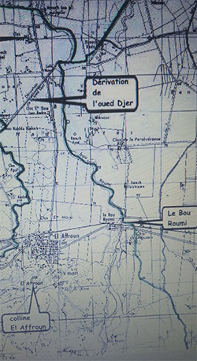
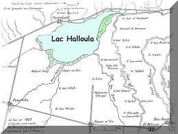
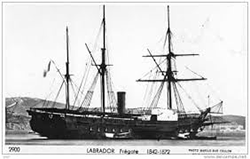
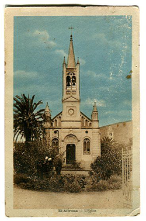
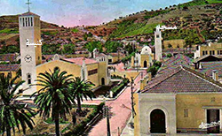

le lac Haloula

la frégate Montezuma

l'ancienne église

Eglise près de la mosquée
التسمية:
سميت مدينة العفرون بهذا الاسم ( العفرون ) نسبة لأحد مجاهدي المنطقة فحسب بعض المراجع فإن العفرون هو: يحيى ابن العربي ابن سي العربي بن اعمر الذي ترك ولدا يدعى يحيى مسجل في
الحالة المدنية سنة 1795 و قد كان سنه آنذاك 24 سنة تقريبا.
استنادا للمراجع الرسمية الاستعمارية المؤكدة بالمآثر الباقية حتى الآن فإن العفرون كان وطنيا يقيم بالمتيجة و قائدا على مواطني القبيلة و أثناء دخول الاستعمار الفرنسي سنة 1830 انتقل هذا الأخير بفرسانه إلى غابة باينام ( عين البنيان حاليا أو قيوفيل سابقا ) حيث تمركز بقواته هناك دفاعا عن الجزائر العاصمة و قد ترك بصماته المخلدة لذكراه هناك: كوادي عفرون - رجال عفرون وجنان عفرون.
بعد سقوط مدينة الجزائر تراجع عفرون مع من بقي من رجاله و رجال موزاية و تمركز بقواته جنوب المتيجة مقاوما يعترض قوافل الجند و المؤن الاستعمارية و هذا حتى سنة 1841 تاريخ إستشهاده و قد كان يساعده في هجومه على القوافل الاستعمارية القائد الجهوي سيدي مبارك الذي انتقل من مليانة إلى حجوط ثم إلى العفرون حيث وقعت معارك عنيفة مع القوات الاستعمارية بقيادة ( ديك دورليون ) سقط خلالها الشهداء و على رأسهم ( مبارك ) المسمى الآن سيدي خليفة، و سيدي زغيمي، و سيدي نويحي، سيدي إسماعيل، سيدي أحمد النمري بوبصلة، حيث كان هؤلاء الشهداء يسيطرون على حافة جبل العفرون ( مرتفع مدينة العفرون حاليا. بالإضافة إلى 40 شهيدا بشارع القدس حاليا ( 40 والي ) بعد سقوط الشهداء السالفي الذكر و تمركزت القوات الاستعمارية بوادي السبت الذي أصبح يعرف عند الأهالي منذ ذلك التاريخ ( بواد الرومي أو بورومي ) كما كانت المنطقة المحصورة بين وادي
السبت ( بورومي ) و وادي جر تعرف بإسم بني جماعة.
الموقع:
تقع العفرون في الجهة الغربية لمتيجة، يعبر عليها واد جر، رفيع الماء في الصيف، قوي التدفق في الشتاء على فراش من الحصى بين أشجار الزيتون و نباتات الدفلي، يلتحق هذا الواد بواد بورومي ليشكلوا واد مزفران المؤدي الى البحر الأبيض المتوس بالقرب
من زرالدة.
المستنقعات التي يسببها واد مزفران و كذالك قرب بجيرة حلولة
جعل من منطقة العفرون غير صحية ( تسبب أمراض صدرية بسبب الرطوبة المرتفعة و أمراض أخرى بسبب التواجد الكثيف للحشرات و الذباب و الجراد)،هذا حتى تم تجفيف البجيرة بواسطة
نفق مؤدي الى البحر بعد مروره تحت الضريح الملكي الموريتاني.
النشأة:
نشأت هذه القرية من قانون 19 سبتمبر 1848 للتجمع الوطني الفرنسي الذي صادق على مقترح الحكومة في ابعاد الأشخاص المحرومين من العمل عن العاصمة و هذا بعد غلق الورشات الوطنية بفرنسا.
مثل باقي المستعمرات الفلاحية، نشأت العفرون من الألم و عدم اليقين من رحيل القافلة الرابعة لتعمير المستوطنات الفرنسية، كان الانطلاق في 22 أكتوبر 1848 من محطة قطار ( سان برنارد) حيث حط الرحال 843 معمر (باتجاه الباخرة في نهر السين، الى ليون، ثم مرسيليا و أخيرا الجزائر)، موجهين الى تعمير و تحقيق مشروع البلدات التالية (كاستيليون(بواسماعيل حاليا)، تافشين (خميستي حاليا)، بورومي و العفرون) .
كلف القائد "ديريو" بقيادة القافلة، التنظيم الطبي بقيادة الدكتور "مونيي"، علم المستوطنات الجديدة عهد الى السيد "أوندري"، تم تعليقه على مقصورة باخرة السلطات العليا، يحمل في أحد جهاته "حرية، أخوة، مساةاة . المستوطنات الفلاحية للجزائر . الانطلاق، باريس 22 أكتوبر 1848"، الجهة الأخرى للعلم تحمل عبارة "الجمهورية الفرنسية، مقاطعة الجزائر العاصمة، بلديات بورومي"و العفرون.
كانت أول رحلة في قوارب غير مريحة من نهر السين ، نهر لوار
و نهر لوان
سقط 16 شخص من الباخرة أثناء الرحلة في نهر لوار بسبب حالة النهر الغير مريحة، ما عدا هذه الحادثة و بعض المرضى، أغلبية
البعثة كانت بصحة جيدة.
بين مدينة ليون و مدينة ارل، ركب المعمرين باخرتين باتجاه مدينة
.مارسيليا
، سجلوا وصولهم الى هذه المدينة يوم 4 نوفمبر 1848
الأحد 6 نوفمبر 1848، ركب المعمرين على متن الفرقاطة "مونيزيما" بقيادة القبطان "كينيو دورنانو" نحو الجزائر
العاصمة..
خرج المعمرون إلى سطح الباخرة في أجواء من البهجة و الفرح و الأناشيد الوطنية, كان في الاستقبال عدة شخصيات من الحاكم العام و عميد الحرية و القبطان و كبير الرهبان رئيس الأُركان و رئيس
الجزائر العاصمة.
أول اتصال بالجزائر العاصمة:
وصلت الفرقاطة التي كان على متنها المعمرون الى ميناء الجزائر العاصمة بعد ثلاث أيام في البحر، صادف الوصول يوم الأربعاء 9 نوفمبر 1848 على الساعة السادية و نصف صباحا، حضيت القافلة باستقبال حماسي من طرف الشعب و السلطات المدنية،
العسكرية و الدينية.
بعد انتهاء الأجواء الترحيبية, وجه المعمرين الى ثكنة تاقارا بأعالي العاصمة لقضاء ليلتهم الأولى, تم إعطاء المعمرين بدلات أحسن من
التي أتوا بها من باريس
الجمعة 11 نوفمبر 1848، أخذ المعمرون طريقهم باتجاه العفرون، وصلوا الى الابيار تحت الهتافات، الأغاني الوطنية و الأناشيد العسكرية، تلقوا أيضا بركات الكاهن المحاط بأتباعه
المسيحيين .
بعد تلقي بركات الكاهن بالأبيار, أكمل المعمرون طريقهم حتى الوصول الى الدويرة, تم تناول الغداء بهذه المنطقة و من ثم اكمال
الطريق الى بوفاريك لقضاء الليلة هناك .
الجزء الأخير من الطريق تم قطعه حتى العفرون, تم الوصول يوم
1848/11/12.
فور وصولهم الى القرية, لاحظ المعمرين أن القرية كانت على حالة
المخطط الموضوع من طرف رئيس الكتيبة (دوكاس).
كغيرها من القرى, كانت على شكل مستطيلي, بمنازل مشيدة جانبا
و أخرى مشيدة على الطريق الرابط بين البليدة و مليانة.
سكنات المعمرين:
فور وصولهم الى العفرون, أسكن المعمرين في أكواخ غير مريحة بسبب التأخر في انجاز مشروع 40 سكن ازدواجي و 26 سكن
فردي.
قررت الحكومة اسكان العزاب في أكواخ مغطات بالديس حتى سنة
1850.
قررت الحكومة اسكان العائلات التي تتكون من ثلاث أشخاص فما فوق البيوت العادية أما الباقي فخصصت لهم ببيوت ذات غرفة واحدة أو نصف منزل. كانت المنازل كلها بنفس النمط الهندسي, قدرت تكلفة المنازل ب 2500 فرانك للبيت العادي و 4800 فرنك
للبيت الازدواجي.
الى سنة 1849 لم تغطي القروض المطلوبة لبنايات القرية الا 16 منزل ازدواجي, 5 منازل عادية ومنزل ذو طابق و 36 نصف
منزل.
المشيدات العمومية::
بعد بضع أشهر من وصول البعثة الرابعة, لم يكن يتواجد الا بناية عمومية واحدة. بالنسبة للكنيسة, تم تثبيتها في كوخ خشبي ذو أربع حجر, تم تخصيص حجرتين بعد ازالة الفواصل بينهما للعبادة, أحد الطقوس المسيحيية, الحجرتين المتبقيتين خصصت احداهما الى غرفة الاجتماعات بالكنيسة و الأخرى الى سكن للأب أو الكاهن أوليفي أول كاهن في كنيسة القديسة "مارسيان" منذ 31 جانفي
1849.
تم تأجيل المشيدات من بلدية,كنيسة, مركز درك وطني, مدرسة
قاعة اللجوء بسبب تأخر في المشاريع.
العفرون كانت تحتوي على مسجد بنمط هندسي مغاربي بالاضافة الى مدرسة قرآنية. مأذنة المسجد تواجه مباشرة برج الكنيسة وهو
ما يوحي التعايش الذي كان بين المسلمين و المسيحيين.
بداية صعبة للمدينة:
المنازل اللتي لم تكن سوى أكواخ خشبية لم تسمح للعائلات باستحمال برد جانفي وحرارة جوان 1849, حالة صحية جد سيئة تسببت في الهجرة الطوعية لأربعة عشر شخص و اخلاء ثلاث
معمرين بسبب اظطرابات نفسية.
بسبب تواجد القرية بالقرب من بحيرة حلولة, حمى الملاريا تسببت في اجداث عدة ضحايا : 4 موتى في أوت 1849, 5 موتى في
سبتمبر، 8 في أكتوبر، 4 في نوفمبر و 4 في ديسمبر.
في سنة 1850, لم تحدث الملاريا ضحايا مثل السنة التي قبلها. في أكتوبر تسببت الكوليرا في قتل 8 أشخاص, في سنة 1851 أمطار طوفانية تسببت في تحطيم المنازل الواقعة في الطريق الشمالي.
الحالة الصحية كانت المشكل الأكبر الذي يهدد حياة المعمرين بمتيجة, لا سيما القاطنين بالعفرون. في 1852, تم دفن 46 من المعمرين بنسبة 150 في الألف, العام الذي يليه انخفضت النسبة الى 18 في الألف, ومن بعدها شهد تذبذب في النسبة بين ثلاث
و عشرون و ثلاث و أربعون في الألف سنويا.
قلة الامتيازات:
مصدر آخر للقلق, كانت تعاني العفرون من ضيق المساحة الزراعية, حيث قدرت ب 735 هكتار فقط لصالح 132 وكيل في
العفرون و بورومي.
بعد تخصيص 9,9 هكتار لعمارة القرية, استفاد كل معمر من 24
ار و قطعة ترابية فلاحية لا تتجاوز هكتارين.
بعد التخلى أو الترحيل ل 26 مستوطن بين الفترة الممتدة من 13 نوفمبر 1848 الى 20 جانفي 1849 لأسباب مختلفة, قلة الخبرة في الأيام الأولى أعطت تحسن تقني واضح للمعمرين الباقين رغم الظروف الصعبة. تم استبدال ال 26 ب 24 وكلاء اظافيين بين 1 جانفي و 3مارس 1850, تم استقطاب أيضا 13 مستوطن جديد و
بعض السكان المعزولين أعطوا زخم جديد للقرية.
وباءات قاتلة:
في 1850, خلفت الكوليرا العديد من الضحايا في نفس العام أتت راهبات كنيسة فانس دوبول استجابة لطلب مديرمركز القرية وراهب القرية أوليفيي قمنا الأخوات بفتح قاعة علاج, مستوصف,
روضة أطفال و مكان لتعلمالخياطة مخصص للأيتام.
العفرون ستحتفظ طويلا بجميل هؤلاء الراهبات. كنا جد مخلصات في أعمالهن,للأسف لم نتمكن من معرفة أسمائهن و لكن على الأقل سنذكر احداهن " الراهبة ماري" المكلفة بقسم اللجوء, حتى بداية القرن 20, درست حوالي 60 طفل لاننسى أيضا فضل الأم لاقارد خالة مخترع جهاز استقبال الموجات التلغرافية اللاسلكية ادوارد برانلي لاخلاصها في مد يد العون و المساعدة في جميع المصائب
حتى وفاتها سنة1888.
في سنة 1867, تسببت حمى التيفوس في احداث العديد من
الموتى.
الزلازل:
في 2 و 3 جانفي 1867, هزات أرضية قوية مصحوبة بأمطار غزيرة تحطم المنازل المبنية من طرف المهندس المعماري 6جانفي 1888, ثاني زلزال عنيف هدم أغلبية بيوت المعمرين, أدى الى وفاة 12 معمر و جرح 50 آخرين, تسبب أيضا في هدم برج
الكنيسة و استوجب اعادة بناء القرية.
سكان المركز الجديد:
حسب الآنسة " جي لوبال" كانت العفرون تحتوي على 77 عائلة ( 77 رجل, 75 امرأة, 59 طفل, 46 طفلة) و 22 عازب ذو أصول باريسية مع نسبة سكنية ت،رة من المقاطعة الادارية 17. المعمرين هم نجارون, دهانون, بناؤون, قفالون, ميكانيكيون, طابعي أقمشة, صياغون, بائعي خمور, شاربونتي, صانعي الحلوى, منظفات, بائعي الورود, معلمون, ملحنين, نقاشين,كتاب,
عمال مطبعة.
رغم ظروف العيش الصعبة للمعمرين الا أنهم تمسكوا بهذه الأرض, خاصة بعد قدوم المعمرين الجدد الى العفرون. من بين القادمين الجدد نجد العائلات التالية ( أفيرسون, بيليسيي, فابر,قراسي, تيسو, لوغي, مولينا, دورا, مونجا, صولار, كاماتشو) لمعالجة نقص التأهيل الفلاحي, كلف الملازم "بوكي" المستوطن " الكسندر رافيكس" ( عضو في هيئة منح الامتياز بواد العلايق)
بكتابة تقرير حول النظرة الزراعية للقرية.
مشروع التنمية الزراعية:
في 28 ديسمبر قدم الملازم "الكسندر رافكس" عرض حالة للملازم "بوكي" حول تهيئة مياه منطقة متيجة و خاصة العفرون هذا العرض يخص الري و الآبار و المنابع و الانهار التي يمتلكها المستعمرون تطرق الى منابع واد بورومي و التي تملك حدود مع واد جر احد روافد واد شفة .كما تطرق الى تهيئة هذه المجاري المائية التي تتضمن عملية تشغيل الطاحنة و في الاخير اتم دراسة المشروع بالتطرق الى تكاليف التهيئة التي تعتبر اكبر من العائدات "هذا واجب نحو الانسانية لتثمين و اظهار للقيمة حيث انه هناك 3 اشياء مهمة في افريقيا الماء الايادي العاملة و المال فالمشاريع
المهمة في البداية تكون مكلفة لتثبت أهميتها في المستقبل.
انه الانتاج حيث ان هذه الكلمة تلخص كل شىء فإذا استطعنا بعد عدة محاولات ان نحفر الابار فافريقيا باكملها ستستيفظ من سباتها الغارقة فيه الى يومنا هذا (تعد هذه الخاتمة المكتوبة في اواخر القرن صوت مستقبل القرى الجزائرية)
تم ايصال هذا العرض من طرف الملازم "بوكي" في 5
جانفي 1849 الى الحاكم العام في الجزائر.
مرسوم 18 جوان 1852:
عند رحيله, ترك مدير مركز العفرون قرية منظمة, خطة تنمية و مشتلة بسعة واحد هكتار لتصبح فيما بعد 2 هكتار و من ثم 4
هكتارلتعهد في الأخير الى المعمر (أوكلاغ).
صعوبة البيئة المعادية حيث يجب اعادة كل شيء تفسر نقل المسؤوليات الادارية في البداية الى أشخاص مدنيين ومن ثم الىمنتخبون بعد اجراء الاقتراع الانتخابي.
مرسوم 18 جوان 1852 سلم العفرون الى رئيس بلدية و الى نائبه
المعين كموظف للحالة المدنية ابتداءا من 1 جانفي 1853.
بعد السنوات العسيرة:
على الرغم من العمل الشاق في تجفيف المستنقعات, وعلى الرغم من حمى الملاريا, وباءات الكوليرا و حمى التوفيس, الزلازل و أمطار 1851,أسراب الجراد, الرياح الساخنة, وكوارث أخرى أنهكتهم الا أن المتبقون على الحياة من 279 المغتربين الباريسيين الذين أتوا في البعثة الرابعة الى العفرون كانوا الأصل في تأسيس هذه المدينة
أكثر تحديدا العائلات "أندري" رب هذه العائلة كان حاملا لراية التأسيس, "دلاس" , "ديتيلولة", "فليدرمان", "قونون", " قريسون", "ايميل مونيري (معلم)", "صوفاج", "تولي و فيدال" لم يتحملوا الظروف الشاقة فقط بل حضروا لاستقبال مناسب في أجواء مريحة عائلات أخرى " بافياو رافيال سنة 1858" منزل أو فيلا مسكيدا, لوبيس, أزيما في 1860, و كذالك قدوم عائلة بيراز
في سنة 1863.
التسمية:
سميت مدينة العفرون بهذا الاسم ( العفرون ) نسبة لأحد مجاهدي المنطقة فحسب بعض المراجع فإن العفرون هو: يحيى ابن العربي ابن سي العربي بن اعمر الذي ترك ولدا يدعى يحيى مسجل في الحالة المدنية سنة 1795 و قد كان سنه آنذاك 24 سنة تقريبا.
استنادا للمراجع الرسمية الاستعمارية المؤكدة بالمآثر الباقية حتى الآن فإن العفرون كان وطنيا يقيم بالمتيجة و قائدا على مواطني القبيلة و أثناء دخول الاستعمار الفرنسي سنة 1830 انتقل هذا الأخير بفرسانه إلى غابة باينام ( عين البنيان حاليا أو قيوفيل سابقا ) حيث تمركز بقواته هناك دفاعا عن الجزائر العاصمة و قد ترك بصماته المخلدة لذكراه هناك: كوادي عفرون - رجال عفرون وجنان عفرون.
بعد سقوط مدينة الجزائر تراجع عفرون مع من بقي من رجاله و رجال موزاية و تمركز بقواته جنوب المتيجة مقاوما يعترض قوافل الجند و المؤن الاستعمارية و هذا حتى سنة 1841 تاريخ إستشهاده و قد كان يساعده في هجومه على القوافل الاستعمارية القائد الجهوي سيدي مبارك الذي انتقل من مليانة إلى حجوط ثم إلى العفرون حيث وقعت معارك عنيفة مع القوات الاستعمارية بقيادة ( ديك دورليون ) سقط خلالها الشهداء و على رأسهم ( مبارك ) المسمى الآن سيدي خليفة، و سيدي زغيمي، و سيدي نويحي، سيدي إسماعيل، سيدي أحمد النمري بوبصلة، حيث كان هؤلاء الشهداء يسيطرون على حافة جبل العفرون ( مرتفع مدينة العفرون حاليا. بالإضافة إلى 40 شهيدا بشارع القدس حاليا ( 40 والي ) بعد سقوط الشهداء السالفي الذكر و تمركزت القوات الاستعمارية بوادي السبت الذي أصبح يعرف عند الأهالي منذ ذلك التاريخ ( بواد الرومي أو بورومي ) كما كانت المنطقة المحصورة بين وادي السبت ( بورومي ) و وادي جر تعرف بإسم بني جماعة.
الموقع:
تقع العفرون في الجهة الغربية لمتيجة، يعبر عليها واد جر، رفيع الماء في الصيف، قوي التدفق في الشتاء على فراش من الحصى بين أشجار الزيتون و نباتات الدفلي، يلتحق هذا الواد بواد بورومي ليشكلوا واد مزفران المؤدي الى البحر الأبيض المتوس بالقرب من زرالدة.
المستنقعات التي يسببها واد مزفران و كذالك قرب بجيرة حلولة جعل من منطقة العفرون غير صحية ( تسبب أمراض صدرية بسبب الرطوبة المرتفعة و أمراض أخرى بسبب التواجد الكثيف للحشرات و الذباب و الجراد)،هذا حتى تم تجفيف البجيرة بواسطة نفق مؤدي الى البحر بعد مروره تحت الضريح الملكي الموريتاني.
النشأة:
نشأت هذه القرية من قانون 19 سبتمبر 1848 للتجمع الوطني الفرنسي الذي صادق على مقترح الحكومة في ابعاد الأشخاص المحرومين من العمل عن العاصمة و هذا بعد غلق الورشات الوطنية بفرنسا.
مثل باقي المستعمرات الفلاحية، نشأت العفرون من الألم و عدم اليقين من رحيل القافلة الرابعة لتعمير المستوطنات الفرنسية، كان الانطلاق في 22 أكتوبر 1848 من محطة قطار ( سان برنارد) حيث حط الرحال 843 معمر (باتجاه الباخرة في نهر السين، الى ليون، ثم مرسيليا و أخيرا الجزائر)، موجهين الى تعمير و تحقيق مشروع البلدات التالية (كاستيليون(بواسماعيل حاليا)، تافشين (خميستي حاليا)، بورومي و العفرون).
كلف القائد "ديريو" بقيادة القافلة، التنظيم الطبي بقيادة الدكتور "مونيي"، علم المستوطنات الجديدة عهد الى السيد "أوندري"، تم تعليقه على مقصورة باخرة السلطات العليا، يحمل في أحد جهاته "حرية، أخوة، مساةاة . المستوطنات الفلاحية للجزائر . الانطلاق، باريس 22 أكتوبر 1848"، الجهة الأخرى للعلم تحمل عبارة "الجمهورية الفرنسية، مقاطعة الجزائر العاصمة، بلديات بورومي و العفرون.
كانت أول رحلة في قوارب غير مريحة من نهر السين ، نهر لوار
و نهر لوان.
سقط 16 شخص من الباخرة أثناء الرحلة في نهر لوار بسبب حالة النهر الغير مريحة، ما عدا هذه الحادثة و بعض المرضى، أغلبية البعثة كانت بصحة جيدة.
بين مدينة ليون و مدينة ارل، ركب المعمرين باخرتين باتجاه مدينة
مارسيليا ، سجلوا وصولهم الى هذه المدينة يوم 4 نوفمبر 1848 الأحد 6 نوفمبر 1848، ركب المعمرين على متن الفرقاطة "مونيزيما" بقيادة القبطان "كينيو دورنانو" نحو الجزائر العاصمة.
خرج المعمرون إلى سطح الباخرة في أجواء من البهجة و الفرح و الأناشيد الوطنية, كان في الاستقبال عدة شخصيات من الحاكم العام و عميد الحرية و القبطان و كبير الرهبان رئيس الأُركان و رئيس الجزائر العاصمة.
أول اتصال بالجزائر العاصمة:
وصلت الفرقاطة التي كان على متنها المعمرون الى ميناء الجزائر العاصمة بعد ثلاث أيام في البحر، صادف الوصول يوم الأربعاء 9 نوفمبر 1848 على الساعة السادية و نصف صباحا، حضيت القافلة باستقبال حماسي من طرف الشعب و السلطات المدنية، العسكرية و الدينية.
بعد انتهاء الأجواء الترحيبية, وجه المعمرين الى ثكنة تاقارا بأعالي العاصمة لقضاء ليلتهم الأولى, تم إعطاء المعمرين بدلات أحسن من
التي أتوا بها من باريس.
الجمعة 11 نوفمبر 1848، أخذ المعمرون طريقهم باتجاه العفرون، وصلوا الى الابيار تحت الهتافات، الأغاني الوطنية و الأناشيد العسكرية، تلقوا أيضا بركات الكاهن المحاط بأتباعه المسيحيين.
بعد تلقي بركات الكاهن بالأبيار, أكمل المعمرون طريقهم حتى الوصول الى الدويرة, تم تناول الغداء بهذه المنطقة و من ثم اكمال الطريق الى بوفاريك لقضاء الليلة هناك. الجزء الأخير من الطريق تم قطعه حتى العفرون, تم الوصول يوم 1848/11/12.
فور وصولهم الى القرية, لاحظ المعمرين أن القرية كانت على حالة المخطط الموضوع من طرف رئيس الكتيبة (دوكاس).
كغيرها من القرى, كانت على شكل مستطيلي, بمنازل مشيدة جانبا .و أخرى مشيدة على الطريق الرابط بين البليدة و مليانة.
سكنات المعمرين:
فور وصولهم الى العفرون, أسكن المعمرين في أكواخ غير مريحة بسبب التأخر في انجاز مشروع 40 سكن ازدواجي و 26 سكن فردي.
قررت الحكومة اسكان العزاب في أكواخ مغطات بالديس حتى سنة 1850.
قررت الحكومة اسكان العائلات التي تتكون من ثلاث أشخاص فما فوق البيوت العادية أما الباقي فخصصت لهم ببيوت ذات غرفة واحدة أو نصف منزل. كانت المنازل كلها بنفس النمط الهندسي, قدرت تكلفة المنازل ب 2500 فرانك للبيت العادي و 4800 فرنك للبيت الازدواجي.
الى سنة 1849 لم تغطي القروض المطلوبة لبنايات القرية الا 16 منزل ازدواجي, 5 منازل عادية ومنزل ذو طابق و 36 نصف منزل.
المشيدات العمومية:
بعد بضع أشهر من وصول البعثة الرابعة, لم يكن يتواجد الا بناية عمومية واحدة. بالنسبة للكنيسة, تم تثبيتها في كوخ خشبي ذو أربع حجر, تم تخصيص حجرتين بعد ازالة الفواصل بينهما للعبادة, أحد الطقوس المسيحيية, الحجرتين المتبقيتين خصصت احداهما الى غرفة الاجتماعات بالكنيسة و الأخرى الى سكن للأب أو الكاهن أوليفي أول كاهن في كنيسة القديسة "مارسيان" منذ 31 جانفي 1849.
تم تأجيل المشيدات من بلدية,كنيسة, مركز درك وطني, مدرسة قاعة اللجوء بسبب تأخر في المشاريع.
العفرون كانت تحتوي على مسجد بنمط هندسي مغاربي بالاضافة الى مدرسة قرآنية. مأذنة المسجد تواجه مباشرة برج الكنيسة وهو ما يوحي التعايش الذي كان بين المسلمين و المسيحيين.
بداية صعبة للمدينة:
المنازل اللتي لم تكن سوى أكواخ خشبية لم تسمح للعائلات باستحمال برد جانفي وحرارة جوان 1849, حالة صحية جد سيئة تسببت في الهجرة الطوعية لأربعة عشر شخص و اخلاء ثلاث معمرين بسبب اظطرابات نفسية.
بسبب تواجد القرية بالقرب من بحيرة حلولة, حمى الملاريا تسببت في اجداث عدة ضحايا : 4 موتى في أوت 1849, 5 موتى في سبتمبر، 8 في أكتوبر، 4 في نوفمبر و 4 في ديسمبر.
في سنة 1850, لم تحدث الملاريا ضحايا مثل السنة التي قبلها. في أكتوبر تسببت الكوليرا في قتل 8 أشخاص, في سنة 1851 أمطار
طوفانية تسببت في تحطيم المنازل الواقعة في الطريق الشمالي.
الحالة الصحية كانت المشكل الأكبر الذي يهدد حياة المعمرين بمتيجة, لا سيما القاطنين بالعفرون. في 1852, تم دفن 46 من المعمرين بنسبة 150 في الألف, العام الذي يليه انخفضت النسبة الى 18 في الألف, ومن بعدها شهد تذبذب في النسبة بين ثلاث و عشرون و ثلاث و أربعون في الألف سنويا.
قلة الامتيازات:
مصدر آخر للقلق, كانت تعاني العفرون من ضيق المساحة الزراعية, حيث قدرت ب 735 هكتار فقط لصالح 132 وكيل في العفرون و بورومي.
بعد تخصيص 9,9 هكتار لعمارة القرية, استفاد كل معمر من 24 ار و قطعة ترابية فلاحية لا تتجاوز هكتارين.
بعد التخلى أو الترحيل ل 26 مستوطن بين الفترة الممتدة من 13 نوفمبر 1848 الى 20 جانفي 1849 لأسباب مختلفة, قلة الخبرة في الأيام الأولى أعطت تحسن تقني واضح للمعمرين الباقين رغم الظروف الصعبة. تم استبدال ال 26 ب 24 وكلاء اظافيين بين 1 جانفي و 3مارس 1850, تم استقطاب أيضا 13 مستوطن جديد و بعض السكان المعزولين أعطوا زخم جديد للقرية.
وباءات قاتلة:
في 1850, خلفت الكوليرا العديد من الضحايا في نفس العام أتت راهبات كنيسة فانس دوبول استجابة لطلب مديرمركز القرية وراهب القرية أوليفيي قمنا الأخوات بفتح قاعة علاج, مستوصف, روضة أطفال و مكان لتعلم الخياطة مخصص للأيتام.
العفرون ستحتفظ طويلا بجميل هؤلاء الراهبات. كنا جد مخلصات في أعمالهن,للأسف لم نتمكن من معرفة أسمائهن و لكن على الأقل سنذكر احداهن " الراهبة ماري" المكلفة بقسم اللجوء, حتى بداية القرن 20, درست حوالي 60 طفل لاننسى أيضا فضل الأم لاقارد خالة مخترع جهاز استقبال الموجات التلغرافية اللاسلكية ادوارد برانلي لاخلاصها في مد يد العون و المساعدة في جميع المصائب حتى وفاتها سنة1888.
في سنة 1867, تسببت حمى التيفوس في احداث العديد من الموتى.
الزلازل:
في 2 و 3 جانفي 1867, هزات أرضية قوية مصحوبة بأمطار غزيرة تحطم المنازل المبنية من طرف المهندس المعماري 6جانفي 1888, ثاني زلزال عنيف هدم أغلبية بيوت المعمرين, أدى الى وفاة 12 معمر و جرح 50 آخرين, تسبب أيضا في هدم برج الكنيسة و استوجب اعادة بناء القرية.
سكان المركز الجديد:
حسب الآنسة " جي لوبال" كانت العفرون تحتوي على 77 عائلة ( 77 رجل, 75 امرأة, 59 طفل, 46 طفلة) و 22 عازب ذو أصول باريسية مع نسبة سكنية من المقاطعة الادارية 17. المعمرين هم نجارون, دهانون, بناؤون, قفالون, ميكانيكيون, طابعي أقمشة, صياغون, بائعي خمور, شاربونتي, صانعي الحلوى, منظفات, بائعي الورود, معلمون, ملحنين, نقاشين,كتاب,, عمال مطبعة.
رغم ظروف العيش الصعبة للمعمرين الا أنهم تمسكوا بهذه الأرض, خاصة بعد قدوم المعمرين الجدد الى العفرون. من بين القادمين الجدد نجد العائلات التالية ( أفيرسون, بيليسيي, فابر,قراسي, تيسو, لوغي, مولينا, دورا, مونجا, صولار, كاماتشو) لمعالجة نقص التأهيل الفلاحي, كلف الملازم "بوكي" المستوطن " الكسندر رافيكس" ( عضو في هيئة منح الامتياز بواد العلايق) بكتابة تقرير حول النظرة الزراعية للقرية.
مشروع التنمية الزراعية:
في 28 ديسمبر قدم الملازم "الكسندر رافكس" عرض حالة للملازم "بوكي" حول تهيئة مياه منطقة متيجة و خاصة العفرون هذا العرض يخص الري و الآبار و المنابع و الانهار التي يمتلكها المستعمرون تطرق الى منابع واد بورومي و التي تملك حدود مع واد جر احد روافد واد شفة .كما تطرق الى تهيئة هذه المجاري المائية التي تتضمن عملية تشغيل الطاحنة و في الاخير اتم دراسة المشروع بالتطرق الى تكاليف التهيئة التي تعتبر اكبر من العائدات "هذا واجب نحو الانسانية لتثمين و اظهار للقيمة حيث انه هناك 3 اشياء مهمة في افريقيا الماء الايادي العاملة و المال فالمشاريع
المهمة في البداية تكون مكلفة لتثبت أهميتها في المستقبل.
انه الانتاج حيث ان هذه الكلمة تلخص كل شىء فإذا استطعنا بعد عدة محاولات ان نحفر الابار فافريقيا باكملها ستستيفظ من سباتها الغارقة فيه الى يومنا هذا (تعد هذه الخاتمة المكتوبة في اواخر القرن صوت مستقبل القرى الجزائرية)تم ايصال هذا العرض من طرف الملازم "بوكي" في 5 جانفي 1849 الى الحاكم العام في الجزائر.
مرسوم 18 جوان:
عند رحيله, ترك مدير مركز العفرون قرية منظمة, خطة تنمية و مشتلة بسعة واحد هكتار لتصبح فيما بعد 2 هكتار و من ثم 4 هكتارلتعهد في الأخير الى المعمر (أوكلاغ).
صعوبة البيئة المعادية حيث يجب اعادة كل شيء تفسر نقل المسؤوليات الادارية في البداية الى أشخاص مدنيين ومن ثم الى منتخبون بعد اجراء الاقتراع الانتخابي.
مرسوم 18 جوان 1852 سلم العفرون الى رئيس بلدية و الى نائبه
المعين كموظف للحالة المدنية ابتداءا من 1 جانفي 1853.
بعد السنوات العسيرة:
على الرغم من العمل الشاق في تجفيف المستنقعات, وعلى الرغم من حمى الملاريا, وباءات الكوليرا و حمى التوفيس, الزلازل و أمطار 1851,أسراب الجراد, الرياح الساخنة, وكوارث أخرى أنهكتهم الا أن المتبقون على الحياة من 279 المغتربين الباريسيين الذين أتوا في البعثة الرابعة الى العفرون كانوا الأصل في تأسيس هذه المدينة أكثر تحديدا العائلات "أندري" رب هذه العائلة كان حاملا لراية التأسيس, "دلاس" , "ديتيلولة", "فليدرمان", "قونون", " قريسون", "ايميل مونيري (معلم)", "صوفاج", "تولي و فيدال" لم يتحملوا الظروف الشاقة فقط بل حضروا لاستقبال مناسب في أجواء مريحة عائلات أخرى " بافياو رافيال سنة 1858" منزل أو فيلا مسكيدا, لوبيس, أزيما في 1860, و كذالك قدوم عائلة بيراز في سنة 1863.